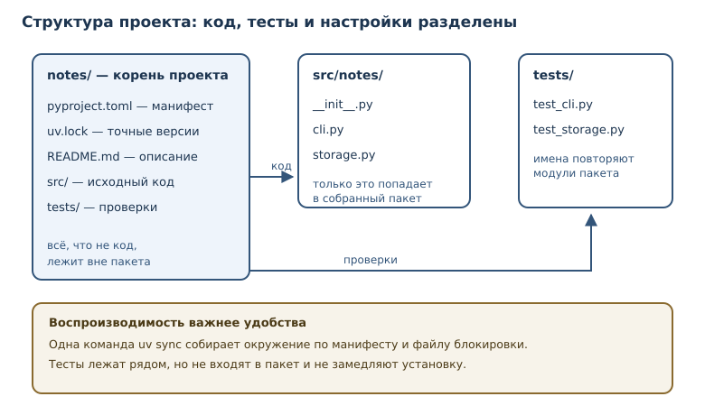
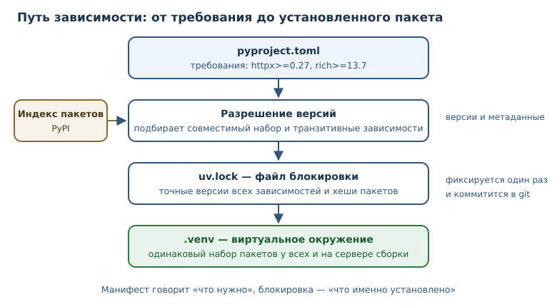

Структура проекта, зависимости и инструменты
Как организовать проект на Python, зафиксировать зависимости и автоматизировать проверку качества кода.
В этой главе
Один файл script.py удобен ровно до тех пор, пока проект помещается в один
файл. Дальше появляются вопросы, на которые нельзя ответить кодом: где лежат
модули, как запустить программу на другой машине, откуда взялись библиотеки,
почему у коллеги те же тесты падают. Инструменты проекта отвечают на эти
вопросы воспроизводимо.
Зависимость — внешний пакет, без которого проект не работает; она
фиксируется с версией и источником. Зависимости устанавливаются не в систему,
а в виртуальное окружение — изолированный набор пакетов и интерпретатора
для проекта. Настройки хранятся в pyproject.toml, а точные версии — в
файле блокировки. В этой главе вы соберёте проект так, чтобы его можно
было одинаково запустить на любой машине.
33.1 Что вы сможете после этой главы
К концу главы у вас будет проект, который собирается и проверяется одинаково на любой машине. Вы научитесь:
- раскладывать код, тесты и настройки по каталогам проекта;
- создавать изолированное окружение и объяснять, зачем оно нужно;
- описывать зависимости и требования к Python в
pyproject.toml; - пользоваться файлом блокировки и индексом пакетов;
- автоматизировать форматирование и статическую проверку кода;
- присваивать версии по правилам семантического версионирования.
33.2 Структура проекта
Рабочая раскладка небольшого проекта выглядит так:
notes/
├── pyproject.toml
├── README.md
├── uv.lock
├── src/
│ └── notes/
│ ├── __init__.py
│ ├── cli.py
│ └── storage.py
└── tests/
├── test_cli.py
└── test_storage.py
В корне лежат файлы проекта: манифест pyproject.toml, описание
README.md, файл блокировки uv.lock. Код — в каталоге src/notes/, тесты —
в tests/, повторяющем структуру пакета. У такого разделения есть
практические причины.
- Код отделён от всего остального. Тесты, документация и настройки не попадают в пакет при сборке и не мешают импортам.
- Тесты повторяют структуру. Файлу
src/notes/storage.pyсоответствуетtests/test_storage.py; найти проверки легко. - У проекта один вход. Запуск описан в
pyproject.toml, а не собран из десятка разрозненных скриптов.
Пакет — это каталог с __init__.py, который Python импортирует как модуль;
внутри могут лежать подмодули и подпакеты. Файл __init__.py может быть
пустым: его наличие сообщает, что каталог — пакет, а не просто набор файлов.
Внутри пакета модули импортируют друг друга по именам, поэтому
переименование файла — изменение публичного контракта, а не косметика.
Каталог src/ не обязателен, но он защищает от одной частой ошибки.
Если пакет лежит прямо в корне, то при запуске из корня Python импортирует
локальную копию вместо установленной. В результате тесты проверяют не то, что
получит пользователь. Раскладка src/ заставляет устанавливать пакет явно и
проверять именно установленную версию.

README: вход в проект
README.md — первое, что читает новый участник. В нём достаточно четырёх
блоков: что делает проект, как установить зависимости, как запустить тесты,
как запустить программу. Хороший README не пересказывает весь код, а доводит
до первой успешной команды. Если инструкция расходится с реальностью, её
исправляют в том же изменении, что и код: устаревшая документация хуже
отсутствующей.
33.3 Виртуальное окружение
Виртуальное окружение — изолированный набор установленных пакетов и интерпретатора для проекта. Без него пакеты ставятся в общую систему: версии двух проектов конфликтуют, а обновление библиотеки для одного ломает другой.
Окружение создают один раз, а затем активируют в терминале перед работой:
$ python -m venv .venv
$ source .venv/bin/activate
(.venv) $ python -c "import sys; print(sys.prefix)"
/home/user/notes/.venv
В приглашении появляется имя окружения — признак того, что команды python и
pip относятся к проекту, а не к системе. На Windows активация выглядит иначе:
.venv\Scripts\activate. Каталог .venv не коммитят: он восстанавливается из
манифеста и файла блокировки.
Окружение можно выключить командой deactivate, а если оно сломалось —
удалить каталог .venv и собрать заново. Это безопасно именно потому, что
все требования записаны в манифесте и файле блокировки: окружение — расходный
материал, а не источник истины.
Современные проекты чаще используют uv — быстрый менеджер пакетов,
который создаёт окружение, разрешает зависимости и фиксирует результат. Но
принцип тот же: отдельное окружение на проект и воспроизводимая установка по
манифесту.
$ uv sync
Resolved 12 packages in 0.18s
Installed 12 packages in 0.05s
Что ещё фиксирует проект
Версия интерпретатора тоже часть окружения. Требование requires-python в
манифесте сообщает менеджеру пакетов, какие версии Python допустимы, а файл
.python-version позволяет автоматически выбрать нужную. Если проект
запускается на 3.11, а разработчик проверяет на 3.14, различия в поведении
могут проявиться уже в эксплуатации.
Кроме пакетов, проект зависит от системных вещей: библиотек для работы с
изображениями, компилятора для расширений, версии базы данных. Всё, что нельзя
выразить в pyproject.toml, описывают в README и в конфигурации
непрерывной интеграции. Полная воспроизводимость — цель, к которой идут
постепенно: сначала фиксируют версии пакетов, затем версию Python, затем
системные требования.
33.4 Зависимости и pyproject.toml
pyproject.toml — стандартный файл конфигурации проекта: метаданные,
зависимости, настройки инструментов. Формат TOML читается стандартной
библиотекой, поэтому манифест можно разобрать и проверить программой.
[project]
name = "notes"
version = "0.3.1"
description = "Заметки из командной строки"
requires-python = ">=3.11"
dependencies = [
"httpx>=0.27",
"rich>=13.7",
]
[project.optional-dependencies]
dev = ["pytest>=8.0", "ruff>=0.6"]
[project.scripts]
notes = "notes.cli:main"
[tool.ruff]
line-length = 100
Здесь указано всё, что нужно для установки: имя и версия проекта, требования
к интерпретатору, обязательные и необязательные зависимости, точка входа
команды notes. Зависимости разработки вынесены в отдельную группу: они не
нужны пользователю, который просто установил пакет.
Прочитать манифест можно стандартным модулем tomllib:
import tomllib
raw = b"""
[project]
name = "notes"
version = "0.3.1"
dependencies = ["httpx>=0.27", "rich>=13.7"]
"""
data = tomllib.loads(raw.decode())
print(data["project"]["name"])
print(data["project"]["dependencies"])
notes
['httpx>=0.27', 'rich>=13.7']
Диапазоны версий бывают разной строгости: >= разрешает любые новые версии,
~= — только совместимые в пределах указанной части (например, ~=1.4.5
разрешает обновления в пределах 1.4 начиная с 1.4.5, но не 1.5), ==
фиксирует ровно одну. Чем шире диапазон
в манифесте, тем больше свободы у менеджера пакетов и тем важнее файл
блокировки, который фиксирует фактический выбор.
Спецификация версии httpx>=0.27 означает «не ниже 0.27». Диапазоны нужны,
чтобы получать исправления, но не терять совместимость. Слишком широкое
требование приводит к неожиданным обновлениям, слишком узкое — к конфликтам.
Файл блокировки — файл с точными версиями всех транзитивных зависимостей для воспроизводимой установки. В манифесте написано «httpx не ниже 0.27», а в блокировке — конкретная версия и хеши пакетов. Благодаря этому два разработчика и сервер сборки получают одинаковый набор библиотек.

Индекс пакетов — репозиторий пакетов (обычно PyPI), откуда менеджер пакетов их получает. Пакет в индексе имеет имя, версию, зависимости и метаданные. Ставить пакеты следует только из доверенных источников: имя пакета легко подделать, а установка выполняет код в вашем окружении.
33.5 Линтеры и форматтеры
Два инструмента следят за качеством кода, и их не стоит путать.
- Линтер — инструмент статического поиска ошибок и нарушений стиля в исходном коде. Он сообщает о неиспользуемых импортах, теневых именах, подозрительных конструкциях.
- Форматтер — инструмент автоматического приведения кода к единому стилю: отступы, кавычки, переносы строк.
Форматтер не ищет логических ошибок, а линтер не переставляет пробелы. Обычно их запускают вместе: форматтер приводит код к общему виду, линтер проверяет то, что нельзя исправить автоматически.
$ ruff format .
1 file reformatted, 3 files left unchanged
$ ruff check .
All checks passed!
Настройки живут в том же pyproject.toml, в секции [tool.ruff]. Единые
правила важны не ради вкуса: когда весь код оформлен одинаково, на ревью
обсуждают поведение, а не расстановку запятых. Автоматические проверки в
непрерывной интеграции не дают стилю разъехаться.
Команды проекта
Чтобы не запоминать длинные вызовы, повторяющиеся команды записывают в одно
место: в Makefile, скрипт или задачу менеджера. Тогда проверка перед
коммитом выглядит одинаково у всех.
$ uv run pytest -q
$ uv run ruff check .
$ uv run ruff format --check .
uv run запускает команду в окружении проекта, поэтому активировать его
вручную не обязательно. Явные команды полезны и в документации: новый
участник видит точную последовательность проверок, а не догадывается о ней.
Проверки перед коммитом
Запускать линтер и форматтер вручную легко забыть. Поэтому проверки подключают к моменту коммита: специальный хук запускает быстрые команды и останавливает коммит, если код не соответствует правилам. Медленные проверки — полный набор тестов — оставляют для непрерывной интеграции.
$ ruff check .
Found 2 errors.
$ ruff check --fix .
Found 2 errors (2 fixed, 0 remaining).
Разделение важное: быстрые проверки должны занимать секунды, иначе их начнут обходить. Полный прогон тестов и сборка — задача сервера, а не ноутбука. Правило хорошего тона: если проверка обязательна, она должна запускаться одной командой и давать понятную причину отказа.
Зачем фиксировать инструменты
Линтер и форматтер — тоже зависимости, и их версии влияют на результат. Новая версия может добавить правило, и сборка внезапно «покраснеет» без изменений в коде. Поэтому инструменты качества фиксируют в группе разработки и обновляют осознанно, как и любые другие зависимости.
33.6 Версионирование
Версионирование — присвоение версий выпускам проекта и зависимостям. Версия нужна, чтобы пользователь понимал, что изменилось, а менеджер пакетов — какие обновления безопасны.
Семантическое версионирование — схема MAJOR.MINOR.PATCH, где номер
сообщает о несовместимых изменениях, новых возможностях и исправлениях.
| Часть | Когда увеличивается | Пример |
|---|---|---|
MAJOR |
несовместимое изменение API | 1.4.2 → 2.0.0 |
MINOR |
новая возможность без поломки | 1.4.2 → 1.5.0 |
PATCH |
исправление без новых возможностей | 1.4.2 → 1.4.3 |
Сравнение версий — не сравнение строк: 1.10.0 новее 1.9.2, хотя строка
"1.10.0" лексикографически меньше. Версии разбирают на числа.
def parse_version(text: str) -> tuple[int, int, int]:
major, minor, patch = text.split(".")
return int(major), int(minor), int(patch)
releases = ["1.10.0", "1.9.2", "1.10.1", "2.0.0"]
print(parse_version("2.14.3"))
print(sorted(releases, key=parse_version))
(2, 14, 3)
['1.9.2', '1.10.0', '1.10.1', '2.0.0']
У версии могут быть и дополнительные части: предварительный выпуск
2.0.0rc1 и метаданные сборки 2.0.0+linux. Предварительный выпуск
предупреждает, что API ещё может измениться. Локальная метка уточняет сборку:
по PEP 440 она участвует в сравнении только после совпадения публичной части,
поэтому 2.0.0+linux считается новее 2.0.0, хотя API у них один и тот же.
Пользователю библиотеки важно понимать эти пометки: не всякое обновление,
прошедшее проверку версий, безопасно, если оно помечено как предварительное.
Семантическое версионирование работает, только если ему следуют. Если
MAJOR увеличивают «когда захочется», пользователи перестают доверять
номерам и начинают проверять каждое обновление вручную. Обратная
совместимость — это обещание, а версия — его краткая запись.
33.7 Типичные ошибки
- Ставить пакеты в системный Python. Это меняет окружение всей машины и рано или поздно ломает другой проект. Всегда используйте виртуальное окружение.
- Коммитить
.venv. Окружение содержит бинарники и абсолютные пути; его восстанавливают, а не переносят. В репозиторий попадают манифест и файл блокировки. - Не фиксировать зависимости. Без файла блокировки установка «сегодня» и «через месяц» даёт разные наборы версий, и ошибка воспроизводится не у всех.
- Смешивать зависимости и инструменты разработки.
pytestиruffне нужны пользователю библиотеки. Их место — в группе разработки. - Считать линтер гарантией качества. Линтер находит нарушения правил, но не знает требований задачи. Чистый отчёт не отменяет тестов.
- Путать версию проекта и версию Python.
requires-python = ">=3.11"ограничивает интерпретатор, аversionв[project]— выпуск вашего кода. - Хранить секреты в манифесте. Токены и пароли не место ни в
pyproject.toml, ни в репозитории: их передают через переменные окружения или менеджер секретов.
33.8 Упражнения
1. Разбор структуры
Дан каталог проекта:
shop/
├── shop/
│ └── __init__.py
├── test_shop.py
├── requirements.txt
└── .venv/
Назовите три проблемы раскладки и предложите исправленную структуру. Ответ обоснуйте: что именно сломается из-за каждой проблемы.
2. Чтение манифеста
Напишите функцию read_project(text: str) -> dict[str, object], которая
разбирает TOML-строку и возвращает словарь {name, version, requires_python, dependencies}. Проверьте её на манифесте из главы.
3. Сравнение версий
Реализуйте is_newer(candidate: str, current: str) -> bool, которая
сравнивает версии по схеме MAJOR.MINOR.PATCH. Проверьте, что 1.10.0
новее 1.9.2, а 2.0.0 новее 1.99.99.
4. Прогнозирование версии
В проекте версия 1.4.2. Выпуск добавляет новую функцию, не ломая старый
API, и исправляет две ошибки. Какую версию следует присвоить? А если бы
пришлось изменить сигнатуру публичной функции? Объясните правила.
5. Манифест с нуля
Составьте pyproject.toml для проекта weather, который требует Python 3.12
и выше, зависит от httpx>=0.27, имеет группу dev с pytest>=8.0 и
ruff>=0.6, и предоставляет команду weather. Проверьте файл разбором через
tomllib.
6. Изоляция окружения
Объясните, что произойдёт, если установить две несовместимые версии одной библиотеки: одну в системный Python, другую в проект. Как виртуальное окружение решает конфликт? Приведите последовательность команд для чистого окружения.
7. Манифест и блокировка
Почему в pyproject.toml указывают диапазон httpx>=0.27, а в файле
блокировки — точную версию? Объясните роль каждого файла и что произойдёт,
если удалить блокировку.
8. Линтер и форматтер
Код содержит неиспользуемый импорт, строку длиной 140 символов и неоднородные кавычки. Что из этого исправит форматтер, а что найдёт линтер? Опишите ожидаемые действия и порядок запуска.
9. Версии зависимостей
Реализуйте check_requirement(requirement: str, installed: str) -> bool,
которая понимает спецификации >=, == и >. Проверьте три случая:
httpx>=0.27 при 0.27.2, httpx==0.27.0 при 0.27.2, httpx>0.28 при
0.27.2.
10. Мини-проект: каркас проекта
Спроектируйте каркас проекта budget: структуру каталогов, содержимое
pyproject.toml, команды создания окружения и запуска проверок. Опишите, где
лежат тесты, точка входа и документация, и объясните, как новый участник
воспроизведёт окружение одной командой.
33.9 Проверка понимания
- Зачем проекту виртуальное окружение, если Python уже установлен?
- Чем
pyproject.tomlотличается от файла блокировки? - Что такое транзитивная зависимость и почему она попадает в блокировку?
- Какую задачу решает форматтер и какую — линтер?
- Почему
1.10.0больше1.9.2, хотя как строка выглядит меньше? - Какой сигнал подаёт пользователю увеличение
MAJORв семантическом версионировании? - Почему каталог
.venvне коммитят?
33.10 Что дальше
Стиль, форматирование и именование кода подробно разобраны в главе 49.
Проект собран, зависимости зафиксированы, проверки автоматизированы. Дальше —
обзор стандартной библиотеки: инструментов, которые закрывают большинство
повседневных задач без внешних зависимостей. О виртуальных окружениях и
запуске программ говорилось в главе 9; о тестах, которые
запускаются в этом окружении, — в главе 32. В главе 34 речь
пойдёт о collections, itertools, functools и pathlib — от подсчёта
частот до работы с путями.